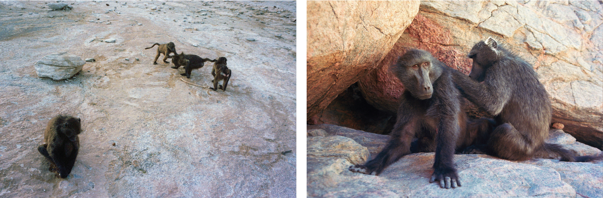
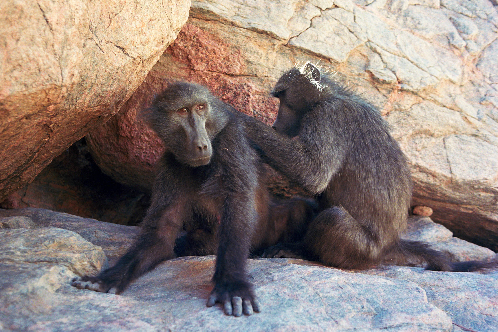
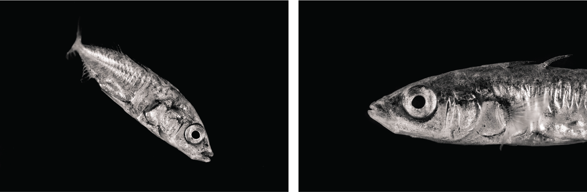
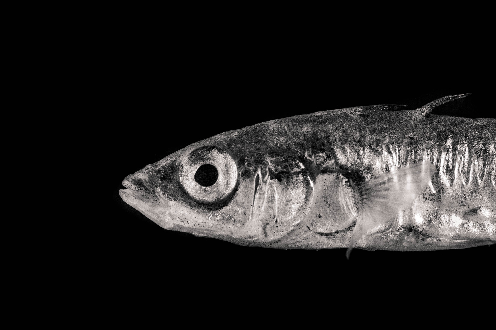

Publications
Past projects
Sociality and injuries in baboons
In social primates, more socially connected individuals live longer, healthier, lives. In this project, I tried to uncover mechanisms linking sociality and health. Using long-term data, I analysed how different measures of sociality were associated with incidence and healing of injuries, in chacma baboons. Regarding injury incidence, the results showed that different dimensions of sociality were associated with both health costs and benefits. However, healing rate did not seem to be clearly predicted by sociality.
I worked on this project with Alecia J. Carter, at the University College London, in collaboration with the Tsaobis Baboon Project.
 Effects of predation risk on animal personality
I designed and implemented a mesocosm experiment, examining whether and how environmental change — more specifically, variation in predation risk — could affect personality in sticklebacks. Many of the strengths of this project were methodological. The fish were living in highly realistic semi-natural ponds, resembling their natural habitat. Moreover, we used an automated tracking technology (RFIT/PIT) to perform the behavioural tests directly in the animals’ ponds, in presence of their conspecifics.
I worked on this project at the University of Groningen, in the research groups of Franjo Weissing, Marion Nicolaus (Sticklelab) and Ton Groothuis, closely with Jakob Gismann and Apu Ramesh.
 